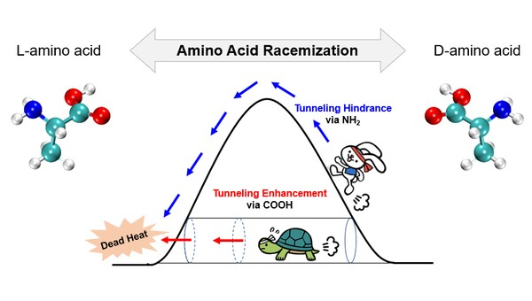
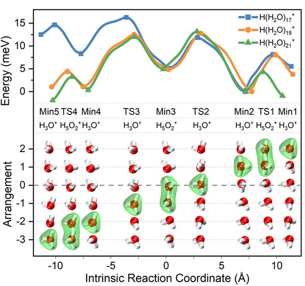
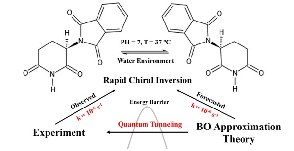
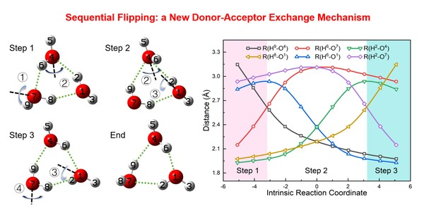
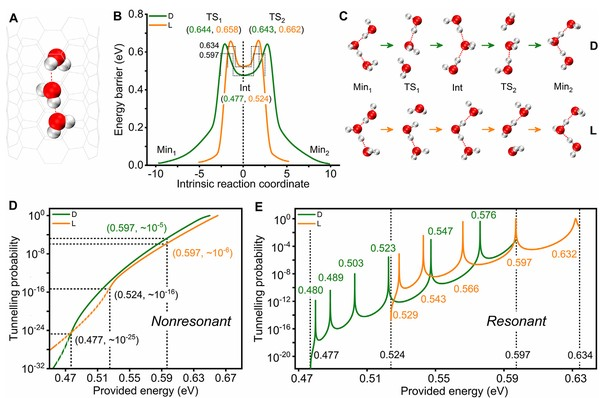

Xinrui Yang (杨欣瑞)
Postdoctoral Researcher · College of Chemistry, Beijing Normal University
I study how quantum tunneling reshapes hydrogen transfer in water, biomolecules, and microdroplets — with first-author work in JACS, JPCL, JCP, and PCCP. In parallel, I build AI agent infrastructure that makes computational chemistry reproducible and self-verifying: a fleet of autonomous research agents whose skills transfer only through verified reproduction.
News
Selected Publications
23 SCI publications · 17 in JCR Q1 journals · 6 first-author (5 in Q1). First-author work published in JACS, JPCL (×2), JCP, and PCCP.





Selected Co-Author Publications (17 of 17 co-authored papers in total)
JACS Au 6, 1359–1369 (2026)
Science Advances (2025)
J. Chem. Phys. 163, 164505 (2025)
Phys. Rev. Research 6, L032019 (2024)
Acta Materialia 120047 (2024)
J. Chem. Phys. 160, 164702 (2024)
Adv. Energy Mater. 14, 2303446 (2024)
Aggregate 5, e539 (2024)
iScience 26, 106281 (2023)
J. Phys. Chem. Lett. 14, 9351–9356 (2023)
Polym. Degrad. Stab. 215, 110450 (2023)
Chinese Chem. Lett. 34, 107857 (2023)
iScience 25, 103674 (2022)
Chinese Phys. B 31, 128107 (2022)
ACS Nano 15, 2490–2496 (2021)
J. Phys. Chem. Lett. 12, 350–354 (2021)
J. Mol. Liq. 336, 116356 (2021)
In Preparation & Preprints
First author · in final preparation (2026)
First author · preprint, code open-sourced · GitHub
Methods note on AI-for-Science infrastructure · in preparation (2026)
AutoResearch · AI Agent Infrastructure
Beyond using AI as a tool, I build AI systems that do research under verification. I operate a fleet of autonomous research agents across multiple workstations, coordinated through a shared blackboard protocol. Skills flow between agents only after reproducibility checks; a new agent must reproduce a published analysis within stated numerical tolerances before it is admitted to production work. The fleet has caught and repaired its own infrastructure defects — each captured as a quantified validation rule, turning operational failures into permanent institutional memory.
The same infrastructure drives my own science: automated transition-state search and tunneling kinetics (AutoTunnel), machine-learning prediction of kinetic isotope effects, and machine-learning potentials coupled with path-integral molecular dynamics (DeePMD-kit / DP-GEN active learning).
Software
Automated transition-state search and tunneling kinetics: barrier width & asymmetry extraction, tunneling-corrected rate constants. Supports 10+ group publications.
GitHub →Machine-learning framework decoding the KIE–κ relationship across reaction families; companion code to the preprint.
GitHub →Automated PMF calculations for solutes at liquid interfaces — free-energy profiles with minimal manual intervention.
GitHub →Literature-review agent skill: structured bilingual notes, multi-project management, citation-network completion.
GitHub →